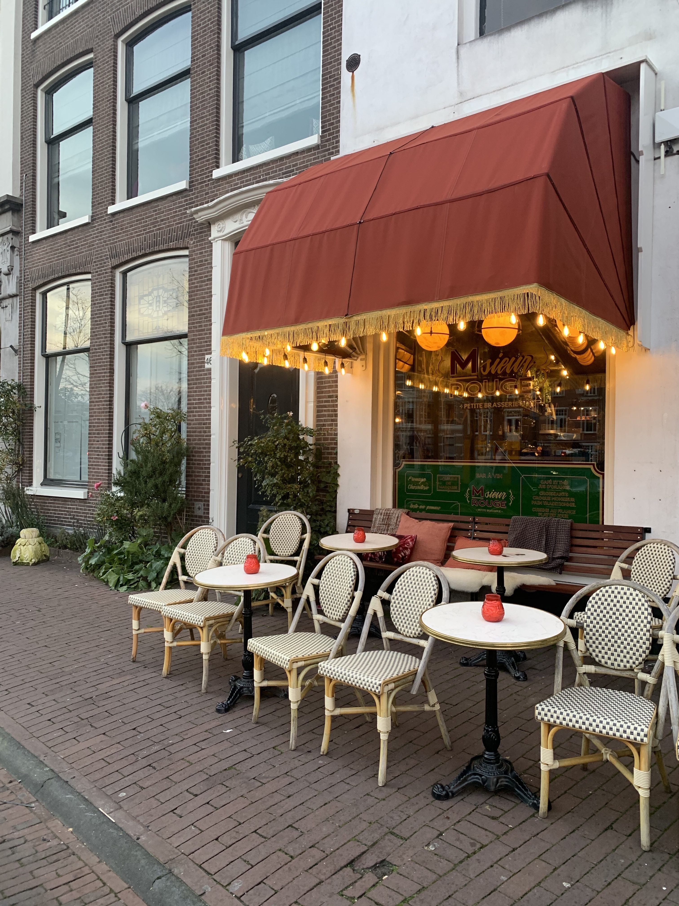
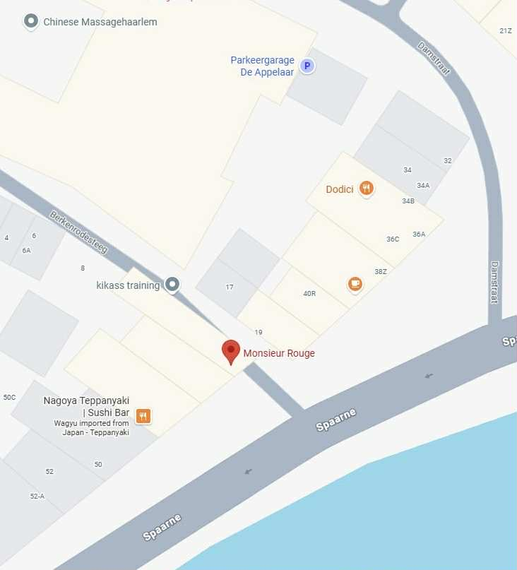

Monsieur Rouge is a stylish French-inspired bistro.
Its dog-friendly outdoor area makes it a great choice for dining with your pup.
Menu
Monsieur Rouge aperitif dishes are available all day long. Think of a delicious pate, oven-baked
Camembert, hand-cut steak tartare, or shrimp croquettes. These dishes can be enjoyed during lunch
or with drinks. They can also be ordered as a starter.
At Monsieur Rouge, you can enjoy a delicious brunch or lunch. Whether its a romantic date, cozy
get-together with friends, a business meeting, or family, you can enjoy the sun by the water with
a glass of wine or a beer.
From brunch to aperitifs and on to dinner. From 17:00, Monsieur Rouge offers delicious main courses
on the menu. Beef, burgers, fish or vegeterian. Their menu is small, but everything is fresh and
lovingly prepared. Naturally, it comes with a matching glass of French wine.
Location
Monsieur Rouge
Spaarne 44, 2011 CK Haarlem

If you wish to book a table, visit their site or give them a call: